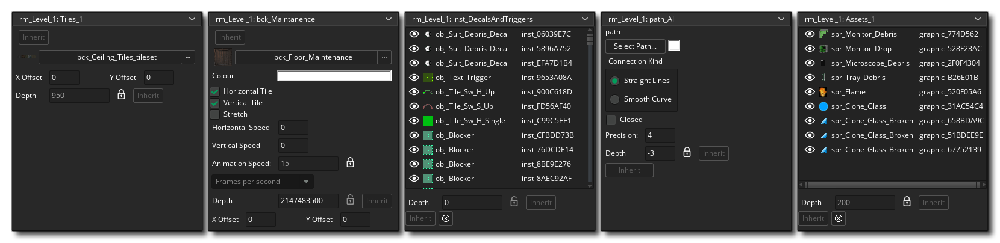
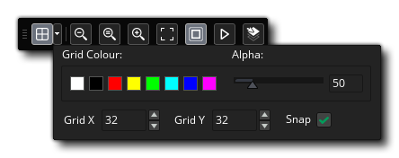
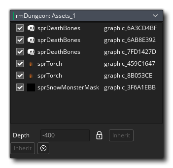

El editor de sala es donde creas tus salas de juego. Cada juego requiere al menos una sala para correr, y en la sala puedes colocar instancias, sprites, mosaicos, caminos y fondos. Cada uno de estos activos diferentes se puede colocar en su propia capa única que luego se puede ordenar como lo desee en el Editor de capas. Debido a la complejidad del editor de sala, le brindaremos primero una breve descripción general de las características más importantes, y luego podrá encontrar más detalles detallados de los encabezados de las secciones que se detallan a continuación.
Cuando crea un recurso de sala, puede hacer clic con el botón derecho  en el árbol de recursos para abrir el menú de la sala. Esto le permitirá crear salas para niños (vea Herencia a continuación), abrir las propiedades de la sala para cambiarlas, agregar un nuevo grupo de recursos para organizar mejor las salas, cambiar el nombre de la sala o eliminarla. Tenga en cuenta que puede hacer clic y arrastrar una habitación hacia arriba o hacia abajo en el árbol de recursos para reposicionarla, así como arrastrar una habitación a otra para "adjuntarla" a esa habitación visualmente (aparecerá con sangría debajo de la otra habitación, normalmente qué le gustaría mostrar la herencia padre / hijo), o arrástrelo a una carpeta de grupo para agregarlo allí.
en el árbol de recursos para abrir el menú de la sala. Esto le permitirá crear salas para niños (vea Herencia a continuación), abrir las propiedades de la sala para cambiarlas, agregar un nuevo grupo de recursos para organizar mejor las salas, cambiar el nombre de la sala o eliminarla. Tenga en cuenta que puede hacer clic y arrastrar una habitación hacia arriba o hacia abajo en el árbol de recursos para reposicionarla, así como arrastrar una habitación a otra para "adjuntarla" a esa habitación visualmente (aparecerá con sangría debajo de la otra habitación, normalmente qué le gustaría mostrar la herencia padre / hijo), o arrástrelo a una carpeta de grupo para agregarlo allí.
Tenga en cuenta que el editor de sala es en sí mismo un espacio de trabajo y, como tal, puede hacer clic  en la pestaña y arrástralo fuera de la ventana principal a una nueva ventana propia, tal vez en otra pantalla, por ejemplo. También puede volver a colocarlo en la ventana principal arrastrando la pestaña hacia la parte superior del IDE y soltando el botón del mouse.
en la pestaña y arrástralo fuera de la ventana principal a una nueva ventana propia, tal vez en otra pantalla, por ejemplo. También puede volver a colocarlo en la ventana principal arrastrando la pestaña hacia la parte superior del IDE y soltando el botón del mouse.
Interfaz
La interfaz de usuario para el editor de sala es simple de navegar y dividir en varias secciones discretas. Las partes del editor que están conectadas, las propiedades de la habitación y el editor de capas, así como las diferentes secciones de propiedad de la capa, también se pueden eliminar del dock simplemente arrastrándolos al espacio de trabajo y pueden volver a conectarse a los muelles. nuevamente arrastrándolos hacia los lados o hacia la parte inferior del espacio de trabajo.
El editor de la sala coloca las cosas en capas dentro de la sala. Cada capa tiene una "profundidad" discreta, donde las que aparecen en la parte inferior de la lista en la ventana de la capa se dibujarán debajo de las que aparecen cerca de la parte superior.
¡IMPORTANTE! Hay una profundidad de capa mínima y máxima de -16000 a 16000. Cualquier cosa colocada en una capa fuera de ese rango no se dibujará, aunque todos los eventos seguirán ejecutándose de forma normal.Las capas se crean haciendo clic
el botón apropiado para el tipo de capa que desea crear, que son:
Instancia: este tipo de capa contendrá todas las instancias para tu juego
Mosaico: este tipo de capa es para dibujar sprites como conjuntos de mosaicos
Ruta: esta capa contiene datos de ruta (solo puede tener una ruta por capa)
- Activo: esta identificación de capa para los activos visuales que se colocarán (es decir: sprites)
Fondo - Este tipo de capa define un fondo, que es esencialmente un solo color o imagen que se dibuja
También puedes crear una carpeta de capa usando el botón de carpeta
donde puede agrupar capas seleccionadas, así como eliminar las capas seleccionadas con el botón Eliminar
. Cada uno de estos tipos de capas se trata aquí con más detalle.
Tenga en cuenta que puede alternar la herencia para el editor de capas, lo que afectará el orden de las capas y la visibilidad. La visibilidad en sí misma se puede establecer haciendo clic en el ícono del ojo al lado de cada una de las capas, o puede hacer clic
.

La ventana de propiedades de la capa de la sala cambiará dependiendo de la capa seleccionada actualmente en el editor de capas. Cada ventana tendrá diferentes propiedades y listas y podrá editar detalles fundamentales sobre cómo se muestra la capa y qué hay realmente en la capa. Por favor, mira aquí para más detalles.
Las propiedades de la sala se dividen en las siguientes tres secciones:
La sección de configuración de la sala es donde puede configurar la herencia alternar entre las configuraciones, así como también nombrar la habitación y si es persistente o no. Normalmente, cuando sale de una habitación y regresa a la misma habitación más tarde, esa habitación se restablece a su configuración inicial. Esto generalmente está bien para la mayoría de los juegos, pero puede que no sea lo que quieres, por ejemplo, un juego de rol o cualquier juego no lineal, donde quieras ir y venir de un lugar a otro y tenerlo tal como lo dejaste la última vez. Verificando la casilla etiquetada Persistent hará exactamente eso. El estado de la habitación se recordará y cuando vuelvas más tarde, será exactamente igual a como lo dejaste, y solo se restablecerá al estado de inicio cuando se restablezca el juego. Tenga en cuenta que hay una excepción a esto: si marcó ciertos objetos como persistentes, las instancias de este objeto no permanecerán en la sala, sino que se moverán a la sala contigua.
Después de eso tienes la opción de borrar el búfer de pantalla. Esta opción es similar a la anterior, solo llena el back-buffer con un color. Si sabes que las vistas van a estar cubriendo toda la pantalla en todo momento o que tienes un fondo de pantalla completa que está siendo dibujado, puedes desmarcar esto (lo que ahorra un rediseño y así ayudar a optimizar tu juego), pero si tener vistas superpuestas que, cuando en la pantalla dejen espacios abiertos, o su fondo tenga alguna transparencia, debe verificar esto para que el área donde no hay vista se llene con el color de dibujo de su elección. Actualmente este color solo se puede configurar a través del código usando window_set_colour().
NOTA: Si está utilizando la corrección automática de la relación de aspecto (como se establece en las Opciones del juego ), siempre debe tener esto marcado; de lo contrario, puede obtener efectos impares sobre el "buzón" en el que está dibujado su juego. Si no usa esto opción, puede desmarcar esto y obtener un pequeño aumento en el rendimiento de su juego (especialmente notable en Android y otras plataformas móviles). Debajo de esto, verá la lista de vistas disponibles (puede definir un máximo de ocho) con la información sobre dónde se dibujarán estas vistas en los cuadros a continuación. En primer lugar, debe indicar si la vista debe ser Visible cuando la sala comience marcando la casilla correspondiente, y si desea usar vistas, asegúrese de que al menos una vista esté visible al inicio de cada sala. Las vistas visibles se muestran en negrita en la lista de vistas que se encuentra arriba.Una habitación tiene que tener un tamaño y esto se define por los valores que ingresa para su ancho y alto en píxeles, y una vez que se ha establecido, puede continuar agregando Código de Creación, en caso de que lo requiera. El código de creación se agrega desde el botón en la parte inferior (junto con el botón heredar para indicar si la sala debe heredar su código de creación o no), y si hace clic en él, se abrirá un editor de código. Este editor le permite ingresar funciones y códigos que se ejecutarán al inicio de la sala, después del evento de creación de todas las instancias, pero antes de su evento de inicio de sala. Este código solo se ejecutará la primera vez que ingrese a una habitación si la sala está marcada como persistente y las siguientes visitas no se ejecutarán.
El botón final en la Configuración de la sala le permite abrir la ventana Orden de creación de instancia: Esta ventana enumera todas las instancias en la sala en el orden en que serán creadas (de arriba a abajo). Si necesita que se cree una instancia específica antes que cualquier otra, simplemente puede hacer clic
Las vistas de la cámara ofrecen un mecanismo para dibujar diferentes partes de su habitación en diferentes lugares de la pantalla, o para dibujar solo una parte de su habitación para cubrir toda la pantalla. Por ejemplo, en la mayoría de los juegos de plataforma, la vista de cámara sigue al personaje principal, ya que, si pudieras ver todo el nivel en la pantalla, tu personaje sería demasiado pequeño para ver y no habría sorpresas para el jugador. Las vistas de cámara también pueden usarse en juegos cooperativos multijugador, ya que te permiten crear una configuración de pantalla dividida en la que en una parte de la pantalla ves a un jugador y en otra parte ves al otro jugador. Otro ejemplo es en los juegos en los que parte de la sala debe desplazarse (por ejemplo, con el personaje principal) mientras que otra parte está fija (por ejemplo, un panel de estado). Todo esto se puede lograr fácilmente en GameMaker Studio 2 usando vistas de cámara.
En la parte superior de las propiedades de las vistas puede activar o desactivar la herencia de la vista, luego hay un cuadro con la etiqueta Habilitar ventanas. Esto debe marcarse antes de que cualquiera de las vistas pueda estar activa en tu juego. La siguiente casilla de verificación es la que dice Clear Viewport Background, que borra la superficie de la aplicación con el color de la ventana, y puede anularse si sabe que está dibujando para cubrir toda la superficie.
NOTA: puede activar o desactivar la herencia para las tres configuraciones principales del puerto de visualización, y luego activar o desactivar la herencia para cada vista de cámara individual.Una vista de cámara está definida por dos conjuntos de valores diferentes, la vista de cámara y el puerto en la pantalla donde se dibujará esta vista. Esto a veces puede causar confusión, así que vamos a explicar esto un poco antes de explicar cómo definimos cada uno de ellos:
- La cámara: un punto dentro de la habitación que se usará para establecer cómo se muestra la habitación en la pantalla (este es un piont abstracto en el editor de la sala y su posición se establece automáticamente en función de la vista y la configuración del puerto de visualización)
- La vista: lo que ve la cámara, según la posición, proyección y rotación de la cámara
- El puerto de visualización: el área de la pantalla física donde se mostrará la vista de la cámara
Entonces, por ejemplo, esto significa que puede tener una vista de cámara de 640x480 en su habitación, y luego establecer el puerto a 320x240, que mostrará la vista reducida a ese puerto de tamaño en la pantalla, y también puede hacer lo mismo y configure la vista en un valor más pequeño y el puerto en grande, lo que hará que la imagen se amplíe para ajustarse al tamaño del puerto y se muestre en la pantalla más grande de lo que es. De esta forma, puede mantener un tamaño de pantalla (puerto) mientras cambia la vista de la cámara para mostrar más o menos de la habitación en la misma área de la pantalla.
La vista de la cámara siempre se define como un área rectangular en la habitación, donde se especifica la posición de la esquina superior izquierda, el ancho y la altura de esta área. Luego debe especificar dónde se muestra esta área en la ventana de la pantalla definiendo el puerto de vista, donde nuevamente especifica la posición de la esquina superior izquierda y el tamaño (tenga en cuenta que cualquier cosa que no sea 0,0 para la esquina superior izquierda) puede dar resultados extraños). Puede tener más de un puerto y pueden superponerse, en cuyo caso se dibujan en el orden indicado uno encima del otro. Tenga en cuenta que el área de la pantalla general siempre se define como un área rectangular, por lo que sus puertos, incluso cuando están desplazados, formarán un rectángulo, con espacios vacíos rellenados por el color de la ventana, lo que significa que en estas circunstancias siempre debe tener Borrar Mostrar búfer marcado o de lo contrario obtendrá artefactos extraños dibujados en los espacios entre puertos.
NOTA: En los dispositivos SurfaceRT de Windows8, hay un límite de lienzo de 2048x2048, lo que significa que el lienzo de dibujo no puede superar esas dimensiones (ni con vistas, ni configurando directamente la ventana del juego). De lo contrario, los gráficos del juego se dañarán o degradarán.La opción Objeto Siguiente es para cuando desea que la vista "siga" (es decir, mantener la vista enfocada) en un determinado objeto. Para hacer esto debes hacer clic
Finalmente puede indicar la velocidad a la que se mueve la vista cuando el personaje ha alcanzado la zona de amortiguación, y este tiene un valor predeterminado de -1. Este valor predeterminado es básicamente "instantáneo" y significa que en el momento en que el objeto siguiente se encuentre fuera del borde horizontal o de la zona del límite vertical, la vista saltará a su posición actual. Ahora, esto no es siempre lo que quiere y, por lo tanto, puede establecer la velocidad de desplazamiento vertical y horizontal para la vista estableciendo los valores en algo distinto de -1. Tenga en cuenta que un valor de 0 hará que la vista no se mueva en absoluto, y cualquier otro valor positivo es cuántos píxeles moverá en cualquier paso, por lo que establecer la velocidad horizontal en 5 hará que la vista siga al objeto a 5 píxeles por paso horizontalmente
Antes de que pueda usar las funciones de física integradas, debe marcar la opción Habilitar física en la parte superior de esta sección (también puede alternar la herencia de esta sección independientemente del resto de la configuración de la sala). Una vez hecho esto, puede continuar configurando las propiedades físicas del mundo, que son algunas de las propiedades básicas que debe haber predefinido antes de que su habitación permita que las instancias físicas funcionen como tales. Para un control más preciso sobre el mundo, puede usar el código (consulte - Funciones de Física para obtener más información).
Lo siguiente que debes hacer es configurar la gravedad del mundo. La fuerza y dirección de esto se calcula como un vector de la posición x / y que establece alrededor de un punto (0, 0). Por lo tanto, una x de 0 y ay de 1 establecerá la dirección de la gravedad como descendente con una fuerza de 1 metro por segundo (para una explicación más detallada, vea - The Physics World: Gravity ). Finalmente, debe establecer la relación de Píxeles a metros para que GameMaker Studio 2 utilice como base para todos sus cálculos de física. Esto se debe a que las funciones físicas funcionan en mediciones del mundo real, por lo que debemos establecer este valor, y usted querrá ajustar esta configuración hasta que el tamaño de píxel promedio de los objetos que está utilizando se traduzca aproximadamente en objetos de física simulada de un tamaño apropiado.
Ciertos tipos de capa tendrán herramientas adicionales agregadas a la parte superior del IDE en la Caja de herramientas (por ejemplo, capas de mosaico o capas de ruta). Las herramientas exactas cambiarán en función del tipo de capa que se está editando, y así se explican en las secciones que tratan con cada capa, a continuación.
En la parte superior del lienzo principal del Editor de habitaciones, tiene algunos controles para controlar cómo se muestran las cosas. Son:
- Alternar cuadrícula de lienzo : Esto activará / desactivará la cuadrícula de lienzo del Editor de habitaciones. Esta es una cuadrícula que GameMaker Studio 2 dibuja sobre el lienzo principal para dividirla en secciones, y de forma predeterminada se establece en 32x32px de tamaño. Sin embargo, si haces clic en el ícono del Menú de Grilla
abrirá las opciones de la cuadrícula:  Estas opciones le permiten establecer el color de la cuadrícula y alfa, así como los valores de celda para la cuadrícula a lo largo del eje X e Y. También tiene una opción para habilitar o deshabilitar la alineación de cuadrícula aquí (habilitada de forma predeterminada). Puedes usar los atajos de teclado " G "y
+ " G "para alternar la visibilidad de la cuadrícula y el ajuste de la cuadrícula, respectivamente.
- Controles de zoom de lienzo
: Estos botones controlan el nivel de zoom de lienzo actual. Puede acercar o alejar y hacer clic en
El botón restablecerá el lienzo para que sea 1: 1 con la sala editada. También puede hacer clic en el botón Ajustar ventana
para hacer que todo el lienzo de la sala encaje en el espacio de trabajo actual del editor (se acercará / alejará según sea necesario para que encaje). Tenga en cuenta que también puede acercarse y alejarse utilizando
/
y la rueda del mouse
y presionando
- Mostrar vistas : Al hacer clic en esto, se habilitará o deshabilitará el rectángulo de la vista. Cuando esté habilitado, verá un área resaltada que indica las diferentes vistas que están habilitadas para la sala.
- Reproducir animaciones
: Al agregar sprites, elementos o mosaicos animados, es posible que desee hacerse una idea de cómo se verán dentro de la habitación sin tener que compilar, y puede hacer clic para iniciar todas las diferentes animaciones. Al hacer clic de nuevo se detendrá la animación.
- Seleccionar lienzo de cualquier capa : De forma predeterminada, al hacer clic en un elemento en el lienzo de la habitación, solo podrá seleccionar los activos que se encuentran en la capa que se está editando; sin embargo, si habilita esta opción, puede hacer clic en cualquier elemento y se seleccionará, cambiando la capa objetivo a la que está el elemento. Puedes usar el atajo de teclado " P "para habilitar temporalmente esto (mantener) P "para habilitar y liberar para deshabilitar)
El centro de la ventana del editor de sala se ocupa del área donde se realiza toda la edición. Aquí es donde colocará sus instancias y recursos, dibujará sus teselas o posicionará sus rutas. Puede acercar y alejar con la rueda del mouse o los controles de la sala en la parte superior, y puede desplazarse manteniendo presionado el botón central del mouse
+
Al crear capas de activos o capas de instancia, puede colocar el activo o la instancia simplemente arrastrándolo desde el árbol de recursos y luego soltándolo donde desea colocarlo. Alternativamente, puede seleccionar un activo o una instancia del árbol de recursos y luego mantener presionado
para obtener una vista previa del recurso "in-situ", y si además hace clic con el botón izquierdo del mouse
Para las rutas, puede crear una nueva capa de ruta y recurso de ruta directamente desde el Editor de sala, o crear un nuevo recurso de ruta y luego arrastrarlo a la ventana del editor principal como lo haría para una instancia, y luego editar la ruta y sus conexiones en la ventana del editor también Para conjuntos de mosaicos, puede "pintarlos" desde el editor de conjuntos de mosaicos.
Tenga en cuenta que puede seleccionar y mover o eliminar varios activos de la misma capa manteniendo presionado
La barra de estado se usa para mostrarle información específica del contexto. La barra de estado siempre le mostrará en qué parte de la sala se encuentra el cursor del mouse, pero también mostrará información adicional en función de la capa que se está editando, la herramienta que se está utilizando y el estado de esa herramienta.


Herencia
Quizás la característica más importante del editor de sala es la herencia. La herencia significa que puede crear una habitación "principal" y luego crear una habitación "infantil" que heredará todas las propiedades de la sala para padres. Esta sala de niños es esencialmente una clonación de los padres, y todo en ella está vinculado a la sala de padres. Esto significa que si cambia la vista en el elemento primario, mueve un mosaico o agrega instancias, se reflejará en la habitación secundaria. No solo eso, en la sala de niños puede desactivar selectivamente la herencia para capas específicas, instancias, activos o cualquier otra cosa que se requiera. Una habitación que tiene propiedades heredadas tendrá los botones heredados encendidos, como se muestra en la imagen a continuación, y luego podrá usarlos para activar o desactivar la herencia para la capa o recurso determinado, etc.
Esto puede ser difícil de visualizar al principio, así que veamos un ejemplo: digamos que tienes una habitación con una ciudad y un castillo en el medio. La ciudad y el castillo se dibujan utilizando diferentes capas de mosaicos y también tiene instancias y algunos caminos para que los PNJ los usen para caminar. Quieres tenerlo para que en el juego se destruya el castillo, pero todo lo demás en la ciudad se ve y se comporta de la misma manera. Usted crearía la habitación inicial con todo lo normal, luego crearía una habitación para niños que heredará las capas de la sala para padres. En la sala de juegos, desactivaría la herencia de la capa de teselas (o incluso fichas individuales) del área del castillo y las movería / agregaría / eliminaría teselas para crear el aspecto de castillo destruido. Cuando un jugador ingresa a esa sala, todas las instancias de la sala principal y todas las fichas, etc... se mantendrán exactamente iguales, excepto las del castillo destruido.
Para crear una herencia de habitación, simplemente seleccione la habitación desde la que desea crear un niño y luego haga clic con el botón derecho  . Esto abrirá el menú de la sala y allí puede seleccionar Crear niño para crear una nueva sala infantil. Esto se creará y "adjuntará" visualmente al padre en el árbol de recursos:
. Esto abrirá el menú de la sala y allí puede seleccionar Crear niño para crear una nueva sala infantil. Esto se creará y "adjuntará" visualmente al padre en el árbol de recursos:
También puede arrastrar cualquier sala desde el árbol de recursos a cualquier otra habitación en el árbol de recursos para que se convierta en un elemento secundario de esa habitación (o arrastre una habitación secundaria de un elemento primario y rompa la herencia). Tenga en cuenta que la herencia tiene varias capas y puede verificar elementos individuales, grupos de elementos en una sola capa, propiedades de elementos o habitaciones enteras como heredadas, y también puede heredar de habitaciones consecutivas (así que la habitación C hereda de la habitación B, que en turn ha heredado de la Habitación A). Si crea una habitación base sin nada, excepto la configuración de la vista, por ejemplo, puede crear todas las demás habitaciones como sus elementos secundarios. Pero puede ir un paso más allá y crear otra sala base con la sala "ver" como su principal, que contiene la instancia general de la GUI y los controladores necesarios en cada sala de juegos. ¡Ahora puede crear salas secundarias a partir de esto y heredarán tanto los controladores como las GUI de la sala principal, así como la configuración de vista del padre de esa sala!
Como puede ver, la herencia es muy poderosa y puede usarla para mantener una estructura de sala mucho más limpia, acelerar el flujo de trabajo y, en general, optimizar el tiempo que dedica a la creación y diseño de salas.
Capas
Para empezar, todo lo que entra en la sala que creas se coloca en una capa. Las capas pueden agregarse, eliminarse y clasificarse desde el Editor de capas, y pueden ser de diferentes tipos, cada una con su propio conjunto de opciones y forma de trabajar. No está limitado al número de cada tipo de capa, y puede tener varias capas de mosaico, o capas de ruta, o capas de instancia, etc.... Cada tipo de capa tiene su propia ventana de propiedades donde puede establecer diferentes cosas dependiendo de el tipo de capa. También puede alternar la visibilidad de las capas, sin que las capas invisibles se procesen en el tiempo de ejecución (pero puede volver a hacerlas visibles en cualquier momento con la función de capa adecuada). 
La imagen de arriba muestra el editor de capas, con las capas actuales en la parte superior y los diferentes botones para crear capas en la parte inferior. Puede cambiar el nombre de cualquier capa de este editor haciendo doble clic lento en el nombre (tenga en cuenta que no puede usar nada excepto letras y el carácter "_" de la barra inferior para nombres) y también puede activar o desactivar su visibilidad haciendo clic en icono de ojo . Si la sala ha heredado capas de una sala para padres, puede alternar la herencia desde el botón en la parte inferior, pero tenga en cuenta que esto afectará a todas las capas. También puedes usar  o
o  /
/  y clic izquierdo
y clic izquierdo  en varias capas para seleccionarlas para duplicación o eliminación (estas opciones están disponibles desde el mouse derecho
en varias capas para seleccionarlas para duplicación o eliminación (estas opciones están disponibles desde el mouse derecho  Menú).
Menú).
Para ayudar a ordenar las capas y mantenerlas ordenadas, puede crear grupos de capas en una carpeta de capas haciendo clic en el ícono de la carpeta  . También puede eliminar una o más capas seleccionadas haciendo clic en el botón Eliminar
. También puede eliminar una o más capas seleccionadas haciendo clic en el botón Eliminar  . Todas las capas también tendrán un valor de profundidad, que define dónde en el orden de dibujo se colocará esa capa cuando se renderice su contenido a la sala. Las capas se dibujan desde la profundidad más alta hasta la más baja, por lo que se dibujará una capa a una profundidad de -100 sobre una capa con una profundidad de 200.
. Todas las capas también tendrán un valor de profundidad, que define dónde en el orden de dibujo se colocará esa capa cuando se renderice su contenido a la sala. Las capas se dibujan desde la profundidad más alta hasta la más baja, por lo que se dibujará una capa a una profundidad de -100 sobre una capa con una profundidad de 200.
Si haces clic derecho  en cualquier capa obtienes el menú de capas:
en cualquier capa obtienes el menú de capas:
Aquí puede abrir la ventana de propiedades de capa para la capa seleccionada, eliminar la capa, cambiar el nombre de la capa o agregar una capa secundaria. Si elige agregar una capa secundaria, la capa actual recibirá un ícono de "carpeta" para mostrar que hay subcapas adjuntas, y la nueva capa se creará debajo de ella, con pestañas a la derecha. A continuación, puede optar por que la subcapa herede sus propiedades de la capa principal y también establecer si debe heredar la visibilidad de la capa principal.
Tenga en cuenta que puede arrastrar las capas hacia arriba o hacia abajo en la ventana para volver a ordenarlas, y también puede seleccionar y mover varias capas usando cualquiera  +
+  para seleccionar de una capa a otra (incluidos todos los intermedios) o
para seleccionar de una capa a otra (incluidos todos los intermedios) o  /
/  +
+  para seleccionar capas de a una por vez. Si coloca las capas encima de una carpeta de capas, se moverán y establecerán como subcapas de la carpeta donde las soltó. También puede bloquear capas para que no puedan editarse por error.
para seleccionar capas de a una por vez. Si coloca las capas encima de una carpeta de capas, se moverán y establecerán como subcapas de la carpeta donde las soltó. También puede bloquear capas para que no puedan editarse por error.
Puede agregar una nueva capa de fondo haciendo clic en
Si desea que el fondo se desplace en una dirección, puede establecer la velocidad horizontal y / o vertical también (cada paso del juego se moverá a lo largo del acceso dado por el número de píxeles que establezca aquí), y también puede - Coloque la imagen de fondo configurando los valores de desplazamiento xey. También puede configurar la velocidad de animación para el fondo si el recurso de sprite que ha seleccionado tiene múltiples subimágenes, aunque está bloqueado de forma predeterminada al valor que estableció en el Editor de Sprites para la imagen utilizada. Finalmente, puede establecer la profundidad de la capa explícitamente, aunque de nuevo, de forma predeterminada, esto está bloqueado y puede simplemente arrastrar y reordenar el orden de las capas en el Editor de capas para cambiar este valor.
Tenga en cuenta que también puede alternar la herencia de un fondo desde esta ventana haciendo clic en el botón en la parte superior.
Puede agregar una nueva capa de instancia haciendo clic en
Esta ventana simplemente muestra una lista de todas las instancias que están actualmente en la capa. Puede agregar más instancias a una capa abriendo el árbol de recursos y luego arrastrando objetos desde allí a la sala o, alternativamente, puede seleccionar una instancia del árbol de recursos y luego mantener presionada
La lista de capas puede ordenarse haciendo clic
Haciendo doble clic
Por defecto, la instancia tendrá un nombre como "inst_38B0BFF", pero esto se puede cambiar a cualquier cosa que desee, siempre que el nombre use solo caracteres alfanuméricos y la barra inferior "_" (y sin espacios). Sin embargo, vale la pena señalar que el nombre que se da aquí (ya sea uno que dé, o el predeterminado que da el IDE) se considera una constant y así debe ser exclusivo de la instancia. Esto también significa que puede usarse en el código n de tu juego para identificar la instancia, pero solo si estás en la misma sala que la instancia.
Debajo del nombre de la instancia puede establecer si la instancia debe heredar de la sala principal, cambiar el objeto que desea que sea una instancia o incluso abrir el Editor de objetos para cambiar las propiedades allí. También puede cambiar las características de esta instancia, configurar un color para combinarlo (blanco por defecto), o girarlo y voltearlo, así como escalar la instancia a lo largo de cualquiera o ambos ejes, y establecer su posición dentro de la habitación.
Finalmente, puede darle a la instancia algún código de creación que se ejecutará directamente después del código de evento de creación de objetos, y es exclusivo de esta instancia (para que pueda, por ejemplo, establecer una variable en el objeto que tendrá toda la instancia y luego modificarla en la creación código para que sea un valor único para una instancia). Al hacer clic en esto, se encadena una ventana de código a la instancia donde puede agregar cualquier función o modificar cualquier variable. Tenga en cuenta que puede activar o desactivar la herencia del código de creación independientemente de la herencia de la instancia.
Vale la pena señalar que cada instancia en una capa se marca automáticamente para exportar cuando se hace el juego. Sin embargo, especialmente cuando se trabaja con herencia, puede ser que no desee que se agreguen instancias específicas a la sala en el juego final (o puede tener una instancia de depuración en cada sala y simplemente quiere excluirla del juego final) ) Si ese es el caso, simplemente desmarcando la casilla de verificación "Exportar" a la izquierda de la instancia en la lista evitará que se exporte como parte del ejecutable. Sin embargo, es importante tener en cuenta que si tiene algún código que haga referencia a ese objeto, entonces el juego no se ejecutará correctamente, por lo tanto, use esta característica con cuidado.
Puede agregar una nueva capa de mosaico haciendo clic en
Cuando la ventana de propiedades de capa se abre también se abrirá la ventana de edición del azulejo, que muestra el conjunto de mosaicos que se utiliza (si cierra esta ventana por error, puede abrir de nuevo desde la habitación> Baldosa de edición de menú en la parte superior de la IDE). Puedes hacer clic
Tenga en cuenta que la ventana del pincel le permite acercar y alejar el mosaico con la rueda del mouse o los botones en la parte superior, y puede desplazarse utilizando el
En la parte superior del editor de sala, cuando seleccionas una capa de mosaico, verás un conjunto de herramientas que son específicas de las teselas:
Esta es la herramienta de lápiz. Utiliza el mosaico seleccionado para pintar en el Editor de habitaciones con el botón izquierdo del mouse . Tenga en cuenta que el valor de índice para el mosaico se muestra en la barra de estado de la habitación en el Editor de habitaciones, y si tiene varios mosaicos seleccionados para pintar (es decir, un pincel), se mostrará una lista de todos los índices de mosaicos utilizados..
Con la herramienta borrador puedes usar el botón izquierdo del mouse La herramienta de relleno le permite llenar una capa de mosaico completo o una selección de mosaicos con el pincel de mosaico actual. El pincel que usa puede ser un mosaico individual o un pincel compuesto compuesto por varios mosaicos, o incluso un mosaico de la biblioteca de animación y haciendo clic Cuando selecciona la herramienta de línea, haciendo clic Cuando selecciona la herramienta Rectángulo, haciendo clic Esta es la herramienta de selección, que se puede usar para definir un área de la capa de mosaico para trabajar. Puede hacer clic con el botón izquierdo del mouse . Cuando tiene seleccionado un área de una capa de mosaico, el resto de las herramientas (Lápiz, Voltear, Girar, etc.) solo funcionarán dentro del área seleccionada. Tenga en cuenta que también puede copiar (
Al hacer clic en esta herramienta, se habilita el estilo de pintura de mosaico automático. Cuando está activo, puede seleccionar cualquier ficha de la pestaña Bibliotecas de Auto-escritura, y luego pintarla en la capa de sala y GameMaker Studio 2 cambiará automáticamente para que coincida con las fichas de alrededor, siempre y cuando haya configurado correctamente la ficha Auto Tile. Tenga en cuenta que al seleccionar un mosaico del conjunto de mosaicos que no es parte de las bibliotecas de autotile se restablecerá la herramienta de dibujo a la herramienta Lápiz estándar. Con esta herramienta puedes habilitar / deshabilitar la herencia para fichas específicas en una capa determinada. Para que esto funcione, primero la sala debe ser una sala hija y la capa debe tener su herencia activada en las propiedades de la capa. Cuando esté en este estado, el editor de sala coloreará todos los mosaicos heredados de rojo de forma predeterminada y haciendo clic con el botón derecho del mouse. Hacer clic en la herramienta Voltear con el botón izquierdo del mouse Hacer clic en la herramienta Espejo con el botón izquierdo del mouse Hacer clic en la herramienta Girar con el botón izquierdo del mouse Al pintar mosaicos en la habitación, puede agregarlos con el botón izquierdo
Tenga en cuenta que si usa la herramienta Seleccionar para seleccionar un grupo de mosaicos en el lienzo del editor de sala y luego cortarlos o copiarlos, se convertirán temporalmente en el pincel actual para pintar.
Para obtener más información y opciones más avanzadas relacionadas con la capa de mosaico, consulte la sección:
Puede agregar una nueva capa de ruta haciendo clic en
Aquí puede seleccionar la ruta desde el árbol de recursos que se usará para la capa y luego cambiar el tipo de conexión definido (ya sea liso o recto ), así como si está cerrado o no y la precisión con la que se debe crear la ruta. Tenga en cuenta también que puede alternar la herencia aquí, y que puede configurar la ruta para que sea de un color específico (el valor predeterminado es el rojo) para hacer que se vean mejor en el editor. Si no tiene definido un recurso de ruta, puede hacer clic en el botón Nuevo para crear uno. Las capas de ruta también tienen un valor de profundidad asociado (bloqueado de manera predeterminada), aunque en realidad no se representa nada en el juego cuando se usan.
Vale la pena señalar que también puede agregar puntos a la ruta haciendo clic
Si haces clic derecho
Aquí puede invertir la dirección de la ruta (esto tendrá poco efecto visible, pero invierte el orden en que se cuentan los puntos de ruta, de modo que el punto de inicio se convierta en el punto final y viceversa), y también los invierta horizontal o verticalmente. También puede eliminar el punto seleccionado de este menú. Tenga en cuenta que puede mantener presionado " T "," S "o" R "luego haz clic
Puede agregar una nueva capa de activos haciendo clic en botón. Esto agregará la nueva capa, y luego abrirá la ventana de propiedades del activo: 
Una capa de activos es simplemente un elemento sprite que se ha colocado en la sala, y puede ubicarlos arrastrándolos desde el árbol de recursos o seleccionando el que desea en el árbol de recursos y luego utilizando
Una vez que coloca un activo en la sala, tiene una cierta cantidad de control sobre cómo se ve haciendo doble clic
Desde aquí, puede darle al activo un nombre único, establecer si va a heredar de la sala principal o cambiar el sprite que desea que muestre. También puede cambiar las características de este elemento de sprite, configurando un color para combinarlo (blanco por defecto) o girando y volteando. También puede escalar la instancia a lo largo de cualquiera o ambos ejes, y establecer su posición dentro de la sala. Si el sprite tiene subimágenes, puede elegir la velocidad de la animación y establecer el fotograma inicial que se mostrará, aunque está bloqueado de forma predeterminada a la velocidad de animación establecida para la imagen en el Editor de Sprite.
Vale la pena señalar que cada sprite en una capa se marca automáticamente para exportar cuando se hace el juego. Sin embargo, especialmente cuando se trabaja con herencia, es posible que no desee que se agreguen sprites específicos a la sala en el juego final. Si ese es el caso, simplemente desmarcando la casilla de verificación "Exportar" a la izquierda del elemento en la lista evitará que se exporte como parte del archivo ejecutable. Sin embargo, es importante tener en cuenta que si tiene algún código que haga referencia a ese elemento de sprite, entonces el juego no se ejecutará correctamente, por lo tanto, use esta característica con cuidado.


Menú de contexto
Además de las herramientas internas, también verá un nuevo menú desplegable en la parte superior del IDE.  Estos menús se explican a continuación:
Estos menús se explican a continuación:
Esto volverá a abrir la ventana del Editor de capas en caso de que la haya cerrado en cualquier momento.
Esto volverá a abrir la ventana Propiedades de la habitación si la ha cerrado en cualquier momento.
Esto volverá a abrir la Ventana de propiedades de la capa si la ha cerrado en cualquier momento.
Esto abrirá la Ventana de Orden de Creación de Instancia (que también se puede abrir con el botón en la ventana Configuración de Habitación ): Esta ventana enumera todas las instancias en la sala en el orden en que serán creadas (de arriba a abajo). Si necesita que se cree una instancia específica antes que cualquier otra, simplemente puede hacer clic
Esto restablecerá el diseño de la ventana del editor de sala a sus valores predeterminados para el espacio de trabajo de escritorio actualmente enfocado.
Cuando se trabaja con una capa de mosaico, esta opción se resaltará en el menú desplegable. Tiene el siguiente submenú:
Al editar la capa de mosaico, puede seleccionar varios mosaicos haciendo clic, manteniendo presionado y arrastrando el botón izquierdo del mouse
La opción Convertir imagen en mosaico es una poderosa herramienta que se puede usar para importar una única imagen y luego extraer las fichas utilizadas de la imagen y recrearla como una capa de mosaico en el editor de sala, creando el conjunto de mosaicos y el sprite necesarios como parte del proceso. Cuando seleccione esta herramienta, se le pedirá que proporcione un archivo de imagen sin comprimir ( PNG, GIF o BMP ) que luego será cargado. En la carga, se te presentará la herramienta Importación de imágenes:
Aquí se le dan opciones sobre cómo dividir el mosaico al crear el juego de fichas, y puede establecer el ancho y alto de la celda, así como también los desplazamientos necesarios alrededor de los bordes. También puede establecer el ancho aproximado (en píxeles) para el sprite final que se crea. Por ejemplo, si el conjunto de mosaicos está formado por 64x64 celdas y establece aquí un ancho de 200, el sprite final creado para su uso en el conjunto de mosaicos tendrá 192 píxeles de ancho (es decir, 3 celdas de mosaico). Si lo dejas en el valor predeterminado de 0, entonces GameMaker Studio 2 intentará hacer un sprite tan "cuadrado" como sea posible con aproximadamente el mismo número de celdas de mosaicos horizontales y verticales.
Después de configurar el modo en que se dividirá la imagen, al hacer clic en la muestra junto a la opción Eliminar color se abrirá el selector de color y se le permitirá seleccionar un color que se eliminará del sprite final. Por lo general, este es un color de fondo que desea eliminar y si configura esta muestra en un valor que no sea 100% transparente (alfa 0) se eliminará el color seleccionado al importar.
Finalmente, tiene la opción de nombrar la capa sprite, tileset y tilemap que creará esta herramienta para usted. Cuando finalice la importación, se creará un sprite con todas las imágenes dispuestas en una cuadrícula, así como un conjunto de fichas de este elemento. En la habitación, se creará una nueva capa de mosaico y se reproducirá la imagen utilizando el juego de fichas generado. Tenga en cuenta que la herramienta no duplicará las fichas y, en su lugar, reconocerá cuándo una celda tiene datos de imagen que coinciden con otra celda (esto incluye las fichas giradas). Puedes ver esto en la siguiente imagen donde solo se ha creado un mosaico de flores y un mosaico de cajas, aunque hay varias instancias de ambos, con algunas instancias giradas en la imagen base: